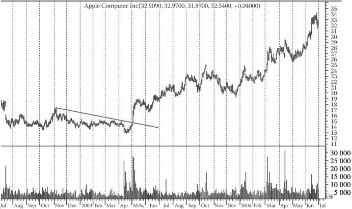

第37章 旧图重读
初入股市的投资者往往会为市场的神秘莫测所折服，就像第一次参加太空旅行，看到火星的景观而震撼不已。市场上充满奇怪的股价波动、无法解释的剧变和出人意料的增长。一只名不见经传的股票会突然爬出债务的泥沼，一飞冲天。一只稳定成长的老股票也会在经济稳定的大环境下反常地萎靡不振。有时，前一秒一切都还很平静，后一秒就突然天崩地裂。（本章图表：图37-1～图37-54。）
这些现象在新手眼中是异常且可怕的。然而，这其实只是市场在无数投资者不断变化的观点冲撞下，出现的正常调整和波动。新手自然会感到害怕，犹豫不决。他们会匆忙地进出交易室，不断翻看金融报道，找朋友讨论，得到一大堆自相矛盾的信息，最终绝望地闭上眼睛，瞎猜一个，希望自己能蒙中正确选项。
有些投资者在股市里浸淫多年，仍然没有形成一种镇定、平静的交易心态。
但是，我们可以掌握股价趋势的基本特性。我们可以在某种程度上，预测特定情况下股价的反应。我们也可以找到应对这些情况的方法，包括采取一些出人意料的操作。我再强调一遍：我们能够成功应对一些预期之外的现象，也能应对那些无法精确预测的情况。
图37-1 美国冶炼采矿公司的股价在1952年走出了一个头肩顶形态。该股股价由1950年的33美元飙升至本图所示的88美元。随后，股价又下跌至37美元。图中，伴随左肩的成交放量是头肩形的典型特征。和理想形态相比，头部的成交量稍大。右肩出现时，成交缩量，这是清晰的警示信号。请注意8月最后一周的反抽以及11～12月出现的中线反弹。1951年，该股走出上升三角形时，股价也曾出现过反抽，预示着三角形出现之前的趋势将会延续
图37-2 在跌势中，趋势线往往不像出现在涨势中的那般规律。但抛开不规律的反弹和成交量变化来看，跌势和涨势的基本原则是一致的。注意在长达6个月的时间里，灵感铜业公司的股价都未触及前期反弹的高点。在这种情况下，我们应该判断跌势仍会持续，除非形态和成交量出现显著变化。请注意该公司股价跌破52美元这一历史重要价位时的成交量变化以及随后的股价走势
图37-3 本图是格拉尼特城钢铁公司股价某个长线涨势的一段。我们可以看到支撑位和阻力位几乎出现于这段时间的每波走势中。
该公司股价在8～9月走出了一个横跨6周的箱体形态，箱体最高点为47美元，最低点为44美元。股价在该形态中曾3次触及47美元这个价位。和大多数箱体一样，7月19日箱体刚开始构建时，成交放量，后逐渐萎缩。8月29日箱体被突破时，成交量再次爆发。
箱体被突破后，股价进入了一个类似旗形的回调，同时成交明显缩量。虽然股价在此次回调中跌破了箱体上界线，却一直停留在下界线之上。请注意股价在10月15日重回47美元的高位时，以及在11月14日达到这波走势的最高点时，成交量均出现明显变化。有趣的是，52美元这个价位在本图中曾5次扮演了支撑位/阻力位的角色：2次是在股价上涨时作为阻力位，3次是在10月股价创新高后作为支撑位。
在接下来的一波涨势中，股价的表现和上述走势如出一辙。此时的支撑位/阻力位是57美元。请注意股价的走势：一开始逐渐接近这一关键价位，然后回调，再急涨至新高（出现于12月中旬），最后重新跌回57美元的支撑位。
如果市场上没有“大新闻”出现，上述涨势往往就是一只个股在长线趋势中的短线变动情况。如果某些重要的市场变化或影响整个行业的新闻频繁出现，那么我们可能会看到长时间的整固或回调。但长线趋势一般是不会轻易变化的。我们必须警惕过早地判断长线反转的出现

图37-4 当格拉尼特城钢铁公司的股价步步攀升时，美森耐公司的股价正在节节后退。
1956年下半年，美森耐公司的股价持续下跌。如果你手中的股票恰好和该公司的股价表现一样，但你还抱着趋势会反转的希望，那么你不是太乐观就是太无知。事实上，如果在图中趋势的早期你曾做空该股，那么你是有理由感到乐观的。
本图所示的股价表现与图37-3截然相反。我们可以看到，股价逐级下跌，每波反弹的短线高点都低于前一个顶部，且连接各高点而画出的趋势线数次与支撑位/阻力位相交，这在跌势中很不寻常。
请注意，每波反弹都未触及前一次支撑位/阻力位的底部价位，例如图中的44、41、38和36美元。
12月末，股价向上突破趋势线，我们当然不认为这是一个反转信号。出现在此类走势之后的突破最多只预示着中线反弹。如果有成交量的配合，我们可以给该信号赋予更大的意义，但成交量的变化在该图中并未出现。如果要买入，那么买入时机应该是某种反转形态出现之后。事实上，股价后续缓慢反弹至40美元，这表示我们应该抓住机会做空
图37-5 经常会有人问：“你怎么判断某个技术形态或某次突破是有效的呢？”在很多情况下，特别是涨势中的形态中，成交量就是一个清晰的判断标准。在特拉华、拉克瓦纳和西部铁路公司的股价走势图中，成交量就提供了决定性的线索。你可以看到，在整个箱体形态中，成交一直处于低迷状态，在箱体的5个高点和低点形成时，成交量也一直较低。
11月4日（星期四），成交突然放量，股价上涨至箱体上界线，并收于该价位。第2天（星期五），成交再次放量，股价突破箱体上界线。此后，股价持续上涨。
形态被突破后，没有出现过反转信号。股价于3月达到25½美元的高点。
突破箱体后，股价涨势尤其猛烈。一般来说，我们预计会出现图37-3所示的几次短线回调。但即使回调真的出现，也不会削弱该牛市形态的有效性

图37-6 本图展示的股价走势与图37-5中的类似，但稍微复杂一些。复杂之处在于，该公司股价于10月末向下突破箱体后，我们是应该立刻卖出还是继续持仓。股价突破箱体后，并未出现任何重要的成交量变化，且股价仅在之后的一个交易日里收于箱体底部价位下方3%的位置。也许持股人早已卖出该股，甚至已经做空。
现在，假设你已做空。请注意11月4日（星期四）和11月5日（星期五）的成交量变化和股价变动。紧接着的周一和周二，股价小幅回调，并伴有成交量的变化。周三，股价上涨，成交明显放量，然后股价走出了一个一周半的整固形态。周五，股价上涨，成交继续扩大。12月第1周（或更早），你就可以看到明确的危险信号，此时应迅速平仓。
我们大可不必因此类小挫折而感到心灰意冷。一些交易者过于关注做空引起的小损失，却在强劲的上涨信号发出后，白白流失了大好的买入机会。买入信号发出后，该公司股价一路上涨，于1955年3月达到26¾美元

图37-7 底部的形成通常比顶部耗时更久，这也是我们用周线图来展示美国扇钢公司股价走势的原因。在该周线图上，我们可以清楚观察到长达1年半的股价走势。在本图左边的整固形态出现前，该公司股价曾于1953～1954年走出了多底形态（底部在21美元附近），后来逐渐上涨。图中上升三角形的顶部大概与1953年的顶部持平。
1955年年初，该形态刚开始构建时，我们很难判断出将会出现一个三角形，尤其是考虑到2月股价的高点超过了三角形后来的水平上界线。但在第1次突破出现之前的7个月里，股价每次上涨到32½美元附近后，就出现缩量回调，且回调的低点形成了一个上升底部。上升三角形的形态也就越来越明显。
9月第1周，股价清晰地向上突破，随后的涨跌表现符合长线涨势的一般特征。请注意11月出现的突破缺口，以及12月至次年2月的回调中清淡的成交量

图37-8 在该日线图上，我们再次看到了下降三角形出现后股价暴跌的情形。本图中，高点不断下移，成交低迷，而高点之间的回调低点则落在一条水平线上。
请注意，在1月25日星期五这天，一条重要的支撑位被击穿，同时成交显著放量。虽然击穿幅度不算太大，考虑到此前回调低点都落在该价位附近，我们应该立刻卖出持仓。不论何时被突破，下降三角形的本身就是一个熊市信号。本图中，下降三角形被突破后，并未出现任何明显的反抽。这是因为，支撑位被击穿后，基本不会出现股价的明显反弹。最安全的做法就是一旦股价收于形态外，就立刻清仓，或设置一个紧密止损位（在本例中，收于形态外的价格要经过除息调整）。
请注意1月末股价跳水时的成交量。成交放量并不一定会伴随着每一段重要跌势出现，但如果在某段跌势中，成交真的达到天量，那么就强调了这段跌势的严重性。
试问：德事隆公司的股票在1月末看上去是否应该买入？你会不会因为“股价已经跌到底了”，或“股价应该要反弹了”，或“股价已经低于其真实价格”，而买入该股呢？
假设德事隆公司的股价真的走出了一波技术性反弹（在上述走势后很有可能出现），你觉得会反弹多少呢？你认为股价会在近期内突破20美元这条线吗？你觉得该股在1957年1月末处于牛市吗
图37-9 a）利碧公司并未受到1929年10月大市恐慌期的影响，其股价一路上涨，并在1930年3～4月创出新高。b）克莱斯勒是一家市场龙头企业，其股价在1928年达到牛市顶部，这比市场恐慌期早了1年多，并且在恐慌期开始前就跌去了60%的价值。c）意高-皮彻尔铅业公司的股价在这段时间里从未出现过牛市。1928年该公司股价曾小幅反弹，但总体来看一直处于熊市。
以上并不是特例。很多其他重要的个股都没有跟随平均指数的走势。这种千差万别的个股表现是正常的市场行情，即使在今天也一样。每只个股都值得单独研究。图37-10展示了1953～1956年表现迥异的几只股票。此外，还有其他几百只股票可证明上述观点

图37-10 a）西印度群岛糖业公司的股价于1956年年底突破连续圆底形态，开启了牛市，而当时平均指数的走势仍疲软无力。b）虽然平均指数在1956年春季不断创新高，但西屋电气公司的股价在1年之前就触顶回落，进入了长线跌势。c）第3只股票的走势与25年前的意高-皮彻尔铅业公司股价类似（见图37-9）。克瑞斯吉公司和其他一些“蓝筹股”都未参与1953～1956年的大牛市。以上6个图表都来自《股票图表》一书（F.W.史蒂芬斯著）。1927～1930年的图表来自此书的特别版，记载了700只股票在1924～1935年的表现。1953～1956年的图表来自此书后来的一个版本

图37-11 诺思罗普飞机公司的股价在1954～1955年走出了一个经典的顶部形态。该公司股价在1953年触底时为6¼美元，后于1955年1月达到了39¾美元的顶部高点。
在本图的下降三角形中，成交量在2～3月股价反弹至高点处爆发，这点很不寻常。撇开这点不看，其他表现完全符合反转形态的特征。3月14日股价突破三角形后，也出现了反抽，不过只持续了短短2天。
你会发现，成交量在形态被突破以及后续股价下跌时并未明显扩大，甚至还不如三角形内短线反弹时的成交量大。但前文曾提到过，如果突破方向向下，我们并不需要成交放量来确认其有效性。
成交量直到跌势的第一阶段结束时才开始放大。不论是涨势还是跌势，成交量在短线走势末期扩大是一个常见的表现。
请注意股价在4月中旬的反弹中走出了一个旗形。股价在1个月后达到了该形态的测算目标。
在后续1年半的时间里，诺思罗普飞机公司的股价再也没有触及过31美元
图37-12 先不要忘了图37-11中诺思罗普飞机公司股价在1954～1955年间的走势。本图是同一只股票在1956年下半年和1957年年初的走势。我们要研究的问题是：该股是继续处于长线跌势还是已经转牛？
按照惯例，我们必须认真观察成交量的变化。请注意8月14日股价到达短线高点时以及8月24日时的天量。9月，成交处于枯竭状态，但股价在10月达到短线高点时，成交立刻暴涨。随后，股价下跌，成交萎缩。当股价反弹至25½美元时，成交再次爆发。我们可以看到，到了12月中旬，25½美元已经成为一个上升三角形的水平上界线。
12月10日，上升三角形被突破，突破的有效性毋庸置疑。随后2周，股价回调，成交低迷，这也进一步证明了突破的有效性。第2年2月初，股价再次创新高，我们看到成交再次放量。
我们写下这段分析时（编者按：1957年），还无法确定诺思罗普飞机公司的股价是否会继续上涨，突破“31美元大关”。但我们可以肯定，在读者心中，该公司在2月初已明确处于涨势，且除非市场出现确定性的变化，否则涨势的预期应保持不变。如果该公司股价后续确实涨到了30～31美元，那么股价在突破31美元之前很有可能先走出某种整固形态。
作为理解本图的背景信息，我们想补充一句：在该股上涨期间，许多航空股正处于熊市

图37-13 密尔沃基铁路公司股价在1954～1955年的走势是学习牛市交易技术的一个绝佳范本。如果某个投资者觉得自己赚够了钱，或是觉得17美元对于该股来说太高了，于是在15美元时卖出，那么他看到这样的趋势，又会怎么想呢？
本图值得我们认真研读，因为它展示了“理想的”涨势的许多特征。在整整一年的涨势中，即使是技术分析的初学者，也不会在任何一个时点感到焦虑，觉得应该卖出手中的股票。而且，不要忘了长期持仓的税收优点。
本图中，股价在8～9月走出了一个完美的对称三角形，这是一个整固形态。对称三角形中，成交一般在初期放量，后随着形态的完成逐渐萎缩。形态被突破时则伴随着决定性的高成交量。在突破后的回调阶段，成交一般比较低迷，就像本图所示。股价回调止步于三角形顶点，这样一个支点一般在此类回调中会发挥稳固的支撑作用。
我们继续研究这点之后的股价走势。11月初股价反弹，其中有两天成交放量，一天是股价突破前期高点时，一天是反弹走势结束时。随后，股价回调至前期高点。
股价在12月进入上涨行情，11月高点被突破时成交爆发了一次，涨势结束时又爆发了一次。随后股价再次回调至11月高点。
12月末股价急涨，再次重复之前的走势和成交量变化，之后回调至12月初的高点，成交低迷。（这个股价走势已经变得单调无趣，却非常重要。本图展示的是长线牛市的技术表现。）
1月股价突破前期高点。你认为在后续的短线回调中，股价会回到哪个价位呢？如果股价回到了17½美元，也就是本月初3个短线高点形成的支撑位，你会感到惊讶吗？
随后股价突破20美元，在一系列小幅震荡后，走出了一个上升三角形。2月末，股价再次创新高。你觉得在接下来的回调中，股价会回到哪个支撑位呢？
现在，我们看到股价走出了第2个上升三角形（注意相对较低的成交量）。4月末，三角形被向上突破，成交爆发。接下来的回调中，股价回到前期高点。
此时，股价又走出了一个上升三角形。你可以看到，成交量在三角形的构建过程中逐渐萎缩，在6月8日（星期三）三角形被突破时突然放大。
很多学生第一次看到这张图时会说：“涨势直到星期二，也就是6月21日这天才结束。”事实上，那天涨势并没有结束，股价下跌是因为该股完成了1.5美元的除息。如果你加上这1.5美元，那么股价刚好在4～5月上升三角形的高点附近，这也是一个支撑位。
如此有规律的牛市形态会在某只个股上“碰巧”持续整整一年，这简直难以想象。这样的股价变化是正常的市场行为，反映的是成千上万名投资者的观点和交易策略。需要指出的是，这样长期、完美的长线涨势并不常见。通常，我们会看到趋势的中断、扭曲、回调

图37-14 只要看一眼，我们就能判断出西屋电气与制造公司的股票正处于跌势中。如果你也在研究该公司的股票，那么你应该早在本图所示时间段结束之前，就看出该股处于跌势而非涨势中。
投资者有一大错觉，那就是自己手中的股票都是绩优股。随着股价下跌，股息率（股息与股价之间的比率）会渐渐上升，同时市盈率也会提高。投资者会以“摊薄成本”为理由继续投资处于跌势中的股票（而不是寻求其他投资机会）。他们会大谈公司的前景、新产品的卖点和管理层的远见。他们会试图向你证明，股票的市价“低于其实际价值”。他们会穷尽一切方法，让自己相信：眼前的下跌不是真的；手中的股票事实上很强劲；广大股民都误判了这只股票；行情一定是错的，只有自己是正确的。
但是，股票的市价是由所有参与者决定的，这也许是你能找到的最全面的评估意见。本图展示的跌势并不是没有意义的，而且在如今的市场上，也不可能将其归咎于少数人操纵股价的行为。本图所展示的走势反映的是一个集合的评估结果，切不可轻易无视。西屋电气与制造公司的股价于1956年11月跌到了50⅞美元

图37-15 本图是画在特克尼普拉特（TEKNIPLATTM ）半对数坐标纸上的股价走势图。从复权价看，奥的斯电梯公司的股价从未大幅跌破三角形顶点价位。最终的涨势让股票升值了60%。本图中，该公司股价经历了漫长的横盘走势，反映了在分析股价走势时考虑除息的重要性。在本图前5个月里，我们看到股价走出了一个几乎完美的对称三角形。第一个关键点出现在5月中旬股价向下突破时。即使考虑到3月的除息（62½美元处），三角形的下界线还是被小幅跌穿。如果投资者在此处卖出该股，我们也不能说他做错了，而且卖出该股也没有立刻造成明显的损失。但是，一名经验丰富的技术分析师会根据此处低迷的成交量而再等一阵，并在60美元左右设置止损位。（我们可以回顾下图37-6的类似情形。）如果投资者选择持仓不动，那么后续股价反弹时的成交放量就可以证明趋势尚未反转。第二个关键点出现在9月末和10月初这段时间，当时埃森豪威尔总统的病情引起了广泛关注。但如果我们考虑到7月和10月的两次除息，那么股价就并未跌破5月低点。此外，在这段跌势中，成交量较低。如果投资者手中仍然持仓，那么就没有理由在此时卖出。随后，股价向上突破10～11月的岛形，结束了漫长的整固形态，恢复了长线涨势，并在1956年涨到了100美元以上（股价经过2并1的并股调整）

图37-16 1957年5～8月，道琼斯工业平均指数走出了一个扩散顶形态。虽然很多个股都曾出现过扩散顶走势，且后续股价都跌到了各自的测算目标，但此类形态从未完整地出现在工业平均指数上。1929年，工业平均指数曾两度出现扩散顶的苗头，但由于持续形态的干扰，扩散顶形态并未完成。我们只能说这两次迹象预示着大市的走势正在变弱。
但1957年的这个形态非常完整、清晰。该形态构建初期，我们的几位朋友都曾发文呼吁大家警惕扩散顶的到来。这其中包括查尔斯E.卡尔登（Charles E.Carden），他当时负责《沃斯堡明星电讯报》（Fort Worth Star Telegram）的“道氏理论评论与分析”专栏。我们得到卡尔登先生的授权后，根据他当时的图表画出了图37-16。
工业平均指数在2月12日触底后，在5月21日（星期二）达到短线高点，这是第1个关键点，以点（1）表示。随后，指数进入短线回调，在5月28日（星期二）跌至点（2），又从该点反弹至6月17日（星期一）的点（3）。这段回调和反弹并没什么特别之处。
扩散顶的第1个迹象出现在6月24日（星期一），以点（4）表示，当时道指收于5月28日底部之下。但这本身并不足以预示趋势的反转。随后，道指继续上涨，越过5月21日和6月17日的短线高点，于7月12日（星期五）收于520.77点的新高，以点（5）表示。至此，扩散顶形态已经十分清晰，一旦指数收于6月24日底部之下，该形态就正式构建完成。
8月6日（星期二），道指的收盘位明显低于6月24日的底部，表示扩散顶完成。这预示着一轮长线熊市，必须引起重视。
前文曾指出，扩散顶形态预示着市场将剧烈震荡，陷入群龙无首的混乱境地。我们的观点是，在反弹的掩护下，人们在大量出货，而且形态的突破基本都是有效的。
由于我们现在分析的是平均指数，而非个股，所以我们认为一旦收盘点位低于点（4），不论低多少，都是有效突破。这是因为，平均指数的敏感性低于个股，对于信号点位（道氏理论的定义）任何程度的突破，我们都认为满足了有效突破的条件。从图上可以发现，我们虽然可以根据最高价和最低价界定扩散顶形态（以粗线表示），但是我们最终根据收盘价界定该形态（以细线表示）。这也符合道氏理论只使用收盘价的原则。
本图中的形态预示着整个市场即将转熊。事实上，大多数个股也都出现了预示走势衰弱的形态。但对于个股，我们仍有必要单独分析，因为即使是在极端的市场情况下，不同个股的表现也千差万别（如本章后续图表所示）。请将本图与1999～2000年出现的扩散顶（见图37-17）对比
图37-17 本图展示了道指在1999～2000年间的扩散顶。如果教育的关键就在于重复，那么不断看到扩散顶形态的读者可能心脏病都要发作了。如果他持多头仓位，却无视了该形态发出的信号，或是不知道该形态的重要性，后果将更加严重。本图的信号也同样预示着灾难的降临。这是一个具有历史意义的市场顶部，其技术细节已被无数人仔细研究过。人们往往为自己的愚蠢找到各种借口：这次的情况和之前不一样，市场环境已经改变，等等。那些听信传言的人只会被忽悠

图37-18 本图展示了工业人造丝公司股价在1957年的熊市。该股全年都没有出现过强劲的上涨。
平均指数并不能说明一切。我们必须单独分析每只个股。道琼斯工业平均指数在1957年出现扩散顶形态，但早在这之前，工业人造丝公司的股价就进入了长线跌势。你会发现，我们常常无法准确地判断某只个股的动向或其长线趋势。但在本例中，股价走势显然是向下的。虽然在整段跌势中也出现了一些短线回调和整固形态，但整体趋势是毫无疑问的。只要你对股价走势稍有了解，就不会买入该股，甚至不会在此时补空仓。
7月29日（星期一），股价向下跳空，成交达到天量，预示着可能出现短线底部。在之后三周半的时间里，股价确实一直维持在24美元左右。但即便是在整固期间，股价也走出了一个小下降三角形。8月21日（星期三），股价向下大幅突破三角形，长线跌势重启

图37-19 本图展示了罗瑞拉德公司在1957年的牛市。虽然大部分个股在1957年都处于跌势，但仍有一些个股出现了强劲的增长势头，似乎并未被大市的阴霾所影响。
平均指数并不能说明一切。很多读者看到罗瑞拉德公司在1957年的牛市都大为惊讶，因为1957年下半年大市实际上在下跌。该公司股价在1957年从15美元上涨到了34美元，并在1958年前3周达到了54美元的高位。本图和图37-18展示的是同一个时间段内的两只个股走势，这着实让人吃惊。
大部分个股的价值都在严重缩水，但还有一些个股，如本图所示的罗瑞拉德公司，全年都在上涨。在1957年一直处于涨势的个股包括：美国糖胶公司、安佳玻璃公司、高露洁公司、通用食品公司、通用雪茄公司、大联盟公司、纳贝斯克公司、帕克戴维斯公司、彭尼克-福特公司、葆雅公司、宝洁公司、路宝来公司、维克化学公司、温迪克斯百货公司、珍妮斯无线电公司。
不论我们对于“整体市场”有多么高超的理论，我们都要记住，自己买卖的是个股。（编者按：指数基金除外。）可能大市正处于大牛市或大熊市，但如果大市的情况和个股的趋势冲突，我们就应该以个股为准，而非平均指数。我们不能假定个股“一定”会跟随平均指数。通常，在熊市中做多强势个股，或在牛市中做空弱势个股，能比单向操作带来更大的灵活性和更高的安全度

图37-20 1961年的后9个月里，一些主要的平均指数仍在不断创新高。但评价指数（见第38章）却未出现涨势，很多个股甚至已经连跌了9个月。这其中不乏一些重要个股，包括：空气压缩公司、联合化学公司、阿利斯-查默斯公司、铝业公司、美国扇钢公司、特灵克公司、海登纽波特化学公司、斯佩里兰德公司、德州仪器公司、环球航空公司、环球火柴公司等。在这样的市场环境下，我们应该精选个股，保持充足的资金储备
图37-21 这是一个常见的顶部形态。1957年年末至1961年春，伯恩迪公司的股价由10美元一路上涨至37美元。1960年大选结束后，股价涨势更加猛烈，一直涨到1961年年初。但该股的涨势于1961年上半年戛然而止，这和当时许多其他个股的表现是一样的。本图中，我们不仅可以看到一个完美的头肩顶走势，还可以看到成交量的配合。4月初，股价上涨时成交放量，而4月最后一周股价反弹时成交并不强劲，虽然股价在这波反弹中创了新高。股价由顶部回落时，成交明显放大，而6月第1周最后一波反弹中，成交寥寥。6月19日，股价跌破颈线，成交放量，同时形成跳空缺口，确认了该顶部形态。虽然该股随后在30美元处停留了一段时间，并在下跌后的新一波反弹中回到了31美元，但长线趋势已非常清晰。1962年6月，伯恩迪公司的股价已经跌至11¾美元
换句话说，我们也许有时会犯错，但总体上仍可以成为一个成功的投资者。做到这一点，我们并不需要大量的经验，而只要知道在特定的情况下通常会发生什么，预期之外的情况出现的概率有多大以及当这些情况真的出现时，我们应怎样应对。这些也是太空旅行者、化学家、物理学家以及我们日常生活中需要面对的问题。
有些经验丰富的投资者经过长时间的观察，发现这些出人意料的现象并不像新手想象的那么多。

图37-22 布伦斯威克公司的股价周线图展示了该股长线牛市的最后阶段，包括1961年3月的峰值、1961年12月的出货期和最终的股价大跳水。
1956～1961年，该股经历了5年的大牛市，曾进行了4次拆股。1961年3月第1周，随着大选后的上涨行情结束，该股以天量达到峰值，但在这周最后一天以一周最低价收盘。对于交易者而言，这种单周反转是一个预警信号。
假定投资者是为了做长线投资才买入该股的，那么他可能在3月和4月初股价走出对称三角形后仍然持仓不动。他可能在1961年的夏季和秋季以及9～10月的反弹中都继续持仓。如果他一直关注该股的走势，那么他会发现50～52美元是一个关键区间。股价跌破这个前期底部即代表支撑位失效。1962年1月，股价大幅跌破50美元（且成交放大），这是一个危险的反转信号。此时，投资者应该立刻清仓，不应再考虑资本利得税或其他因素。虽然该股的跌势比大市崩盘早了好几个月，但这波跌势意味着布伦斯威克公司的股票已经十分危险，不论其他个股当时的走势如何。如果投资者注意到了这波跌势，但还想要等股价反弹时再清仓，那么他将被套牢。布伦斯威克公司的股价一路下跌，再也没有反弹回来。到了1962年10月，股价已跌至17美元
图37-23 宝丽来公司股价在1962年走出了一个箱体形态。请注意股价在178～202美元震荡时，成交一直处于低迷的状态。5月10日（星期四），成交达到年初以来的峰值，该股股价跌破支撑位，至168美元。这是一个明显的出逃信号。如果投资者仍抱有反弹后再清仓的想法，那么将面临致命的后果。不论你手上的股票之前的表现多么亮眼，当市场情况剧烈改变后，如果还心存侥幸不肯放手，那么你会付出昂贵的代价。请注意该股跌破支撑位时，离5月28日的“近恐慌”状态至少还有两周时间。到了5月28日，宝丽来公司的股价已跌去50多美元，且跌势愈演愈烈

图37-24 当大多数个股都显示出颓势时，铜山公司的股价在1962年年初仍在创新高，但其实并未超过1961年的顶部。
该股转熊的迹象出现在4月的小反弹之后。4月30日（星期一），股价跌破19美元，收于17美元，这就完成了一个头肩顶形态。在这个例子中，股价在急跌前还反弹了3天，但一般来说，在如此清晰的熊市信号出现后，还期望出现反弹是非常危险的。
顺便提一句，该顶部形态在5～6月股价暴跌之前就已构建完成
本书所用图表大多是1947年本书第1版面世时收录的。有些描述的是1928～1929年的情况，有些是20世纪三四十年代的。（编者按：也有80年代、90年代和21世纪的。）不难发现，不同时期的个股在相应的趋势阶段中或达到转折点时，有相似的表现。
我们曾提过，形态、趋势、支撑位和阻力位都会重复出现。任何人都能在过去或当下的个股走势图上、在任何交易所或任何市场的股价走势中，观察到这些技术形态。
从第5版起，我们在本章中收录了一些经典的技术形态。这些形态与前文介绍的形态类似，但基本出现在1947～1966年。（编者按：第8版收录了一些2000年前后的技术形态。）当然，我们可以收录的技术形态远远不止这么多。
图37-25 和大多数股票一样，美国冶炼采矿公司的股价在1962年春季暴跌。5月28日之后，股价继续下滑，跌势持续了整个6月。6月之后的这波反弹不仅仅是熊市中的技术性反弹了。这波反弹止步于29美元，之后股价又小幅下跌了2周。
接下来，8月第2周的成交爆发，虽然此时没有任何清晰的形态出现，但股价于8月6日冲破了29美元，这点非同寻常（股价在5月23日、28日和6月12日都触及过该价位）。
我们是将8月6日收盘价作为立刻买入的信号，还是等突破走势完成，待股价回调时再买入，这点不好判断。在这个例子中，如果投资者选择等待，那么会错失一段获利机会。请注意8月回调时，股价回到了29美元这个支撑位，随后继续上涨。
考虑到这个时期大多数个股的走势，美国冶炼采矿公司的表现相当亮眼。这个例子再次证明：个股的走势不一定跟随平均指数

图37-26 这张是道琼斯工业平均指数从1961年7月到1962年6月的周线图。图上显示，该指数在1962年4～6月的暴跌之前，曾构筑了一个头肩顶形态。一般来说（特别是在个股的图上），头肩形的左肩往往伴随着较大的成交量。然而，指数走势本身就已显得岌岌可危。在指数构筑这个头肩形的整个期间，许多重要公司的股票出现了顶部反转走势。请注意，就该指数的这个头肩顶形态而言，颈线被击穿是明确的反转信号

图37-27 这张是ABC售货机公司1961年4～9月的日线图。这张图比较复杂，使人迷惑，但有几点值得分析。请注意4～5月间完美的小头肩顶，特别是最后一次反弹伴随着成交缩量，然后股价向下突破。该股在6月进行了1拆2的拆股，但这次拆股并未显著影响该股的技术走势，除了日均成交股数有所增加。此外，下跌趋势确立后，股价的反弹（特别是7月中旬的那次）未能突破连接4～5月高点的趋势线。这波跌势后来延续了1年多，于1962年10月到达11¼美元的低点
各不相同的股价表现
虽然大多数股票会随大市趋势变动，但这并不是说所有股票变动的时机或幅度都一样。有些个股的变动方向甚至和平均指数相反。我们通常说，股市在20世纪20年代曾出现过“大繁荣”，在1929年10月陷入恐慌期。但这个表述并不完全正确，有很强的误导性。观察个股走势的技术派投资者能通过建立多样化且平衡的股票组合，保护自己免受无法弥补的损失。

图37-28 这张是赛洛公司1963年1～6月的日线图。这是对称三角形作为持续形态的好例子。此类（对称）三角形既可能意味着长线趋势的整固，也可能构成反转形态。这两者有一个共同特征：股价先放量抵达三角形的第一个折返点，然后在一个逐渐收窄的形态内波动，同时成交萎缩。在此期间，可以说股票既处于由形态下边界标定的上升趋势中，也处于由形态上边界标定的下跌趋势中。请注意该股向上突破时成交量放大。突破三角形后，股价随即回调至三角形两条界线相交的“支点”。该股4～6月的上涨仅小幅超越了三角形所预示的目标位。然而，股价到达这一目标位并不一定意味着长线趋势的终结。赛洛公司股价于1963年8月涨到了33¼美元
事实上，我们研究了676只个股在1924～1935年的股价表现，只有184只在1929年8～10月触顶，然后在10～11月大幅下跌。有262只个股在1929年前就进入了长线跌势。还有181只个股在1929年前9个月触顶，并且在夏季结束前就开始下跌。5只个股1929年结束后才进入跌势。44只个股在1929年后还不断创新高。图37-9～图37-11展示了1927～1930年间表现截然不同的3只个股。
图37-29 这张是美国熔炉斯伯钢公司1963年3～8月的日线图。这是一个上升三角形的好例子，股价反复上攻至某一价位，每次回调获得支撑的价位则逐渐升高。此类形态一般意味着一轮牛市正在酝酿中，而相反的形态（下降三角形）意味着一轮熊市正在酝酿中。请注意22美元附近各个高点的较大成交量以及8月突破时的巨大成交量。如果需要为这轮牛市的力度寻找更多佐证，那么8月12日开盘时的突破缺口就是好证据。股票在经历这样一次突破后，很可能遭遇获利回吐（成交量不大），也许会回调到22美元或更低一点的价位，但是牛市本质不改

图37-30 这张是超级石油公司1962年6～11月的日线图。该股在1961年10月的古巴危机期间表现相当坚挺。这张图是双底的极好例子。如果两个底部合理地接近，那么它们就无须处于完全一致的水平。重要的是，股价下跌后到支撑，然后反弹，之后再次下跌，然后在几乎同样的价位再次遇到支撑。各个低点之间应有一定距离，时间跨度起码达到6周，最好更长。此外，低点之间的反弹应有一定力度，至少达到15%的涨幅；只有在股价放量突破反弹的高点价位后，才能确认长线底部形态的效力。这一突破发生在11月13日；股价随后延续了长线牛市趋势，于1963年5月涨到了1559美元，自突破当日收盘价上涨了500多美元。
双顶形态有相反的效力。双顶与双底相似，但由处于几乎同一价位的两个顶部组成，两个顶部相隔数周或数月时间，之间有一波调整；只有在股价跌破调整的低点价位后，才能确认顶部形态的效力

图37-31 这张是通用钢铁业公司1962年11月至1963年4月的日线图。对不熟悉股票通常走势的一般人来说，股价的波动显得毫无意义、完全随机。如果他们关注延续数月或数年的整体趋势，那么他们往往会只考虑“平均指数”的趋势，而无视这样一个事实：有不少股票可能在其他股票不断走低时大幅上涨。趋势线并非总是很完美的直线（虽然有时是）；然而在本例中，涨势相当稳定地持续了较长一段时间，期间仅出现了几次不重要的回调、整固等。此外请注意，3月初1拆2的拆股并未对上升趋势产生重大影响，除了使成交股数有所放大。请与图37-20中安富利电子公司的下降走势对比
图37-32 这张是联美电影公司1963年2～8月的日线图。请观察图上的支撑位和阻力位。该股在1963年春夏的牛市中逆大盘而下跌。该股在3、4月几次反弹至31美元，然后在5月初向下突破。在5、6月，该股再次反弹，但止步于3月低点水平。随后该股继续下跌，接着反弹至4月末低点水平。在7月，该股再次下跌，随后小幅反弹至6月低点25美元。这些是典型的支撑位和阻力位。支撑位被显著跌破后，往往转变成阻力位；反之，阻力位被显著升破后，往往转变成支撑位
图37-33 这张是犹他-爱达荷糖业公司1963年1～6月的日线图。有时股票会突然上涨或下跌，但并不引发持续的长线趋势。在本例中，我们无法判断长线趋势将向上还是向下。展示本图是为了说明，当股票突破重要的支撑位或阻力位后，会出现怎样的显著走势。该股从1月中旬到5月14日（星期二）的整段走势可被视为一个箱形，其底部在10⅛或10¼美元，顶部在11¾美元。在这个箱形中，每当股价反弹时，成交量放大。5月的暴涨出人意料，带动了所有糖业股上涨，但这波涨势只是昙花一现。可是，这波涨势毕竟相当大，那些大胆、敏锐的交易者可能在5月14日后选择该股进行投机。接下来的5个交易日里，该股从星期三的开盘价12美元涨到了5月21日（星期二）的收盘价17½美元，涨幅高达46%。我们一般不推荐此类交易，它需要勇气、经验，并要求交易者愿意承受多笔小额亏损以赚取一笔大额利润。然而，短线交易者在观察到5月21日的走势（单日反转、成交量异常、出现缺口）后，可通过以下途径迅速获取最大利润：在下一日开盘时抛售股票，或在略低于收盘价的地方（如17⅜美元处）设置止损指令

图37-34 这张图上，控制数据公司1965年3月底、5月初的短线向下突破是预警信号。然而，5月至6月初的修复形态颇为重要，该形态的上下界线逐渐收拢，构成一个上升楔形，明确预示着该股将走熊。而如果楔形是下降的，那么它就强烈预示着股价可能向上突破。请注意在这个楔形内部，股价到达最高水平的那两天里，收盘价位于当日成交区间的低点附近。后来该股放量大跌，展现了上升楔形的杀伤力
图37-35 这张图展示了几个重要的技术特点。在7、8、9月，美国冶炼采矿公司股票处于休眠状态。该股于9月27日向上突破，然后休整1周，接着继续放量上攻。请注意10～11月的大对称三角形整固形态。如果我们画出这个三角形的上界线和下界线，那么我们就能看到，12月1日（星期三）的那次突破价量配合理想，标志着涨势的持续。该股从28½美元一直涨到了62美元以上，期间没有任何转弱迹象

图37-36 这张是利文斯顿石油公司1965年1月至1966年1月的周线图，很好地展现了一个长线底部。1965年5月有一个清楚的下行缺口，表明了该股的弱势。此外，那波下跌伴随着较大的成交量。然而，从7月到10月中旬，成交量逐步萎缩，股价波幅逐渐收窄，构筑了一个对称三角形。10月该股放量向上突破，此时投资者有“第二次机会”，可在11月第1周股价回调至三角形顶部时买入

图37-37 这张是派克-贝尔电子公司1965年8月至1966年1月的日线图，图上有一些良好的技术形态。首先是9、10月的旗形整固，这是“旗面往往在旗杆一半处飘荡”的经典例子，股价在脱离旗面区域后继续上升，幅度达到了旗面区域前的涨幅。（请与图33-13中马丁-帕里公司1945年的走势比较。）该股从1965年10月至1966年1月构筑了一个上升三角形，上界线几乎水平，低点逐步抬升，成交量逐渐萎缩，最终在1966年1月放量突破。在此例中，从1965年9月到1966年1月，我们看不到任何卖出该股的信号
图37-38 这张图上的走势可被视为一个非常平坦的头肩顶或一个较长时间的圆顶。股价跌破66美元是一个预警信号，而2月跌破60美元则是一个明确的熊市信号

图37-39 占星公司的股票在1970年1月出现了极其罕见的暴跌。但这样的暴跌以前出现过，未来也会再次出现。当股票出现这种走势时，必须密切关注。该股原本处在典型的完美上升趋势中。1月15日停牌一天后，该股大幅跳低开盘，随后一路下行。交易于9月末停止。一些读者可能记得，以前有过与此类似的跌势，如麦克货车公司、第五大道蔻驰公司、美国毛织品公司都发生过这种情况。此类跌势往往是由公司的突发变故引起的，而交易者并不需要知道具体原因，图表自身就表明了一切。正如麦克白夫人所言：“接到出发的命令后不要站着，而要立即出发。”村民工业公司1971年4月30日的表现就是此类“缺口走势”的好例子，当时该股在1天内从7⅜美元下跌至4¼美元，跌幅达到了42%。此类缺口走势的方向几乎总是向下，我们很少见到向上的类似缺口。股票在此类突破之后，虽然可能短暂反弹，但几乎总会延续跌势，且出现过很多被交易所摘牌的情况。此类个股的持有者不应觉得自己的买入是个错误，也不应去寻找大跌前的走软迹象，因为通常并不存在这样的迹象。但是，他应该立即抛售股票以避免更多亏损
图37-40 这张是甲骨文公司的股票走势图。这是突然跳空下跌的一例，发生在20世纪末。这些缺口是由公司盈利低于预期引起的，当时市场处于牛市顶部，这种走势很常见；投资者可在公司发布盈利报告前做空股票，上涨风险很小，获利往往非常丰厚
图37-41 公共服务电力和天然气公司是典型的公用事业股。这类股票有很多，服务于各个城市或地区。它们往往有相似的市场表现，原因是其质地大同小异。
公司的盈利、分红、股价三者之间有一定关系。盈利和分红都不足以独立地完全决定“价值”，原因是还有其他许多因素能够影响“价值”，比如盈利的可靠性、未来的发展前景、应税情况、公司在研发方面的投资等。
电力和天然气公司在大多数地方享有受监管的垄断地位，因而拥有稳定可靠的收入。它们还处于不断的“成长”中，原因是用户对能源的需求不断增长。大多数公用事业股的走势与公共服务电力和天然气公司相似。1959～1970年，该公司的报告盈利逐年增长。同时，分红也逐年增长，除了1970年与上年持平。任何以市盈率等简单指标为估值依据的人都会得出结论说，该股在1970年时的估值吸引力是1965年年初的2.5倍。
显然，需要考虑的因素还有更多。大基金等机构不会轻易放弃“物超所值”的投资机会。图上的疲弱走势无疑反映了公用事业行业整体面临的挑战，包括成本高昂的新型公用事业、污染治理设备、监管放松等其他问题
图37-42 在1969年，虽然大多数股票都走熊，但是梅莫雷克斯公司处于4年牛市的最后一波涨势。注意从1969年11月到1970年1月的岛形顶以及这一期间的低成交量。1970年2月初的突破缺口非常重要（参见图37-39）
图37-43 飞虎公司的股票从1967年的高点48½美元开始，持续下跌两年至11¼美元。但在1970年春季和夏季，该股探底成功，构筑了一个头肩底反转形态，然后飙升，到1971年2月已几乎收复前面两年的全部失地

图37-44 相信你已见过多次与这张图类似的形态。行动工业公司的这张日线图上有一个大上升三角形，形成于1971年12月和1972年1月。注意图上典型的突破和回调，以及直到1972年4月的持续升势
图37-45 戴尔公司有两个方面值得注意。首先，当然是这家电脑公司从大学寝室发家的亮丽故事。其次，是该公司股票频繁发生的突然下跌，这在下一张图上体现得更清楚。该股不适合那些厌恶股价大起大落的投资者。投资组合的构建应与投资者自身的偏好相适应。这张图上，戴尔突破了一条长期趋势线（读者很容易用一把直尺画出来），构筑了一个多头陷阱，然后跌到了20美元，在此过程中出现数个重要的下跌缺口（见下一张图）。在这张图右侧，该股成交放量，也是预警信号

图37-46 戴尔公司股价频繁地突然下跌，走势确实令人吃惊。但是，异常警觉的交易者看到趋势线被突破后，可以避开杀跌。一般的技术派交易者会离场并对突破缺口做空。重要的是见微知著

图37-47 与微软公司结盟对英特尔公司股价构成了利好，这充分反映在此图上。短线交易者也许会围绕趋势线快进快出多次，但长线投资者会耐心等待“箱体楔形”的构筑完成，而股价并未跌破这个楔形。趋势线越是陡峭，就越可能被跌破

图37-48 这张是诺基亚公司的股价走势图。图上的水平趋势线标出了支撑与阻力区域（低点与高点）。这些基准点可帮助技术派交易者把握涨势和跌势。请注意1999年的高点影响了2004年的高点。股价在击穿最陡峭的一条上升趋势线后，连续跌破了几条水平趋势线，这是再次发出警报信号

图37-49 这张是超微半导体公司的股价走势图，反映了半导体业务的风云变幻。作为英特尔公司的竞争对手，超微半导体公司股票波动频繁，提供了许多交易机会。股价猛烈突破短期下降趋势线后，中期交易者可开始做多
图37-50 这张是雅虎公司的股价走势图。该股沿着一条完美的趋势线持续上涨，直至2000年4月，然后转为下跌。结合高点附近的水平趋势线，可以准确地判断趋势反转。高点处的巨大成交量也是警报信号

图37-51 这张图和亚马逊的那张（见图23-13）颇为相似，这并非巧合。读者还记得迈吉说过的一条原则吧：物以类聚。互联网公司也是这样。雅虎的走势似乎强于亚马逊，但销售图书和实物商品可比销售电子影像（世界上最好的业务）困难。雅虎公司的基本面非常吸引人。科技极客革命性地拓展新世界，我们喜爱这些故事。但是，此类故事不足以使我们停止在图表上画趋势线；一旦股价跌破趋势线，我们还是该果断抛售。再深的爱也不能违背规则
图37-52 这张是苹果电脑公司的股价走势图。该股的走势很好地体现了技术分析的核心原则之一：无视（或抱着怀疑的态度来看待）新闻。当财经媒体一拥而上唱好或唱衰某家公司时，必须保持怀疑。如果我们相信媒体，那么苹果公司的命简直比猫还多，因为媒体已经无数次预测该公司“将死”。该股的走势很符合基准点法（见第28章），比如这张图上的趋势线（水平和倾斜的）以及大扇形形态。多年以后，读者可以回过头来看看这些趋势线的预示效力。图37-53生动地展现了苹果涨势启动时的技术信号，包括突破三角形时的大阳线和成交放量。我们一向反对媒体如此不尊重苹果公司，而媒体也为此付出了代价，因为苹果公司的股票在2011年涨到了425美元。某些媒体人的无知已暴露得淋漓尽致

图37-53 预测苹果公司“将死”的媒体文章层出不穷。媒体对唱衰苹果的热衷令人叹为观止，但该公司却不断推陈出新打造新增长点，其领导人史蒂夫·乔布斯已赢得了无数“粉丝”。现在的苹果公司已不只是一家电脑公司，它还是一家音乐公司。凭借iPod的成功，苹果股票令投资者趋之若鹜，启动了新一轮涨势。这张图上，4月的成交放量是最初的启动信号。当然，最初的放量主要来自震仓，这是一个假信号。震仓完毕后，该股放量向上突破下降三角形，接着连拉了几根大阳线。其实不管后续走势如何，放量突破下降趋势线本身就应被视为重要的技术形态
图37-54 这张是纳斯达克100指数的走势图。遵循第28章中的基准点法，可为长线投资者设计一套几乎完全客观的方法，用它来替代或补充道氏理论。在这张图中，我们将基准点法应用于周线图。因此，“三天法则”要相应地改成“三周法则”。结果是买入之后的持有时间长达10年左右！按照这套方法，从1991年箭头处开始做多，一路持有到2001年左右，然后反手做空。等指数在2002年触底后再度做多，然后一路持有到2006年的大牛市。图上的箭头表示重要信号，数字代表基准点，止损位（比基准点低约5%）没有标出